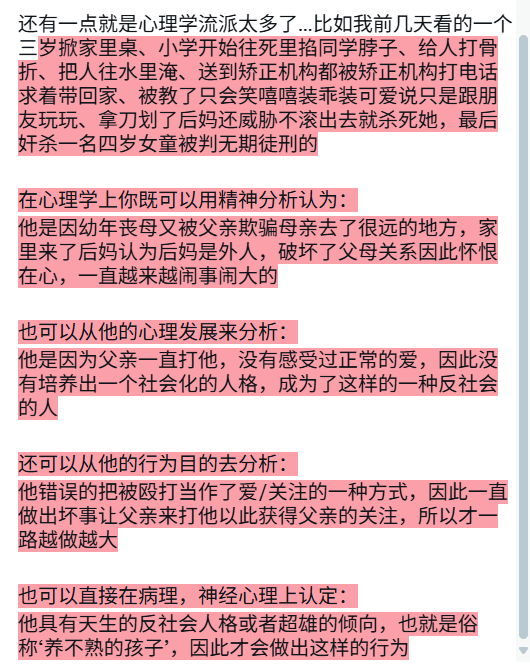

めふき2.0（宠物宅）
@lan_shang32900
@shirumesu 太坏了，什么时候可以出完整体系规范一下😫不过希露给图片很有帮助！我会努力往这些方向分析现状的

希露梅斯
@shirumesu
@lan_shang32900 因为国内的心理咨询师都不太正规，早期就是一个社会人士都能考的证，并不需要什么比如医学相关经验的门槛，也没有什么伦理的考核培训，导致水平完全参差不一，要医学门槛的在医院当负责开药的精神科医生，虽然后来有改善，但早期遗留太多了（
病人跟治疗师是双向选择嘛，找到适合自己的才是最重要的！ https://t.co/vmU9rIcxm0